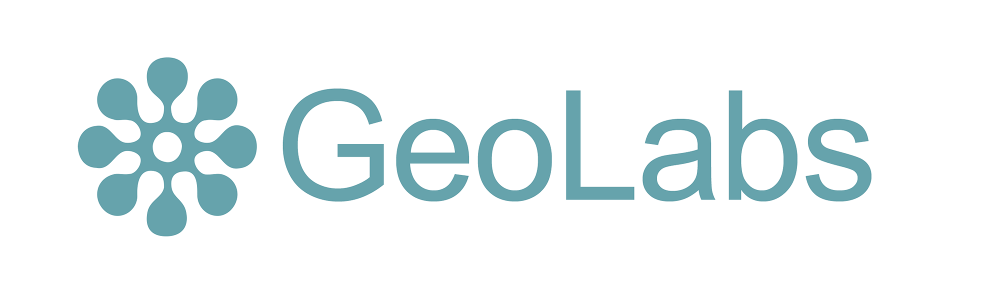
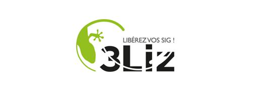
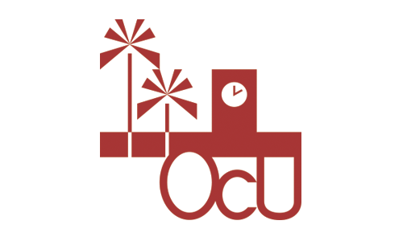

ZOO-Project workshop¶
Welcome on the ZOO-Project workshop section, here you can find hands on materials presenting how to use the ZOO-Project for the first time in an OSGeoLive environment.
This document is released under the Creative Commons Attribution-ShareAlike 4.0 International Public License (CC-BY-SA).

Sponsored By
 Special Thanks To Our Knowledge Partners
